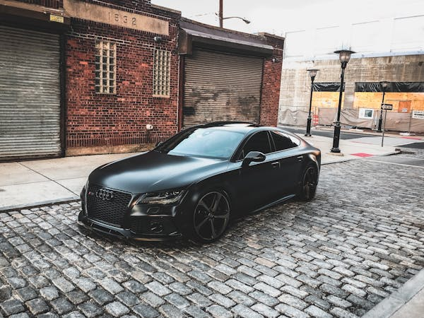

BLOG
BMW: The Epitome of Luxury and Performance

BMW, short for Bayerische Motoren Werke, has long been synonymous with luxury, performance, and engineering excellence. Founded in 1916, this German automaker has built a legacy on delivering vehicles that combine innovative technology with superior driving dynamics.
One of the hallmarks of BMW is its commitment to the "Ultimate Driving Machine" philosophy. Every model, from the sporty 2 Series to the opulent 7 Series, offers a driving experience that is both exhilarating and refined. BMW's iconic kidney grille and sleek, aerodynamic designs are not just visually striking but also engineered for optimal performance.
Under the hood, BMW vehicles are powered by a range of high-performance engines. The brand’s pioneering use of turbocharging and hybrid technology ensures that drivers enjoy powerful acceleration and impressive fuel efficiency. BMW’s M division takes this a step further, producing high-performance variants that are revered in the automotive world.
Inside, BMWs are a testament to luxury. Premium materials, state-of-the-art infotainment systems, and advanced driver-assistance features create an environment where comfort and technology coexist seamlessly. The iDrive system, with its intuitive interface, sets the standard for in-car connectivity and control.
In conclusion, BMW continues to lead the luxury car market by harmonizing cutting-edge technology, exquisite design, and unparalleled driving pleasure. Whether you're a driving enthusiast or someone who appreciates refined craftsmanship, BMW offers a range of models that cater to diverse tastes and preferences.
Mercedes-Benz: A Legacy of Luxury and Innovation

Mercedes-Benz, a name that resonates with opulence, innovation, and automotive excellence, has been a cornerstone of the luxury car market since its inception in 1926. The brand’s three-pointed star symbolizes its commitment to luxury, safety, and performance.
Mercedes-Benz vehicles are celebrated for their elegant design and superior craftsmanship. From the compact A-Class to the flagship S-Class, each model exudes sophistication and attention to detail. The exterior designs are both timeless and modern, with fluid lines and a distinctive grille that convey a sense of prestige.
Under the hood, Mercedes-Benz combines powerful performance with cutting-edge technology. The brand’s engines, whether gasoline, diesel, or hybrid, are engineered for both efficiency and dynamic performance. The AMG division, Mercedes-Benz’s performance arm, pushes the envelope with high-performance models that deliver exhilarating speed and handling.
Inside, Mercedes-Benz offers an unparalleled luxury experience. The cabins are adorned with premium materials, from fine leather to polished wood, creating an ambiance of refined elegance. Advanced infotainment systems, such as the MBUX (Mercedes-Benz User Experience), provide intuitive control and connectivity, ensuring that drivers and passengers stay connected and entertained.
Safety is paramount for Mercedes-Benz. The brand is a pioneer in automotive safety technology, with features like PRE-SAFE® and DISTRONIC PLUS® that offer advanced driver assistance and protection.
In summary, Mercedes-Benz epitomizes luxury, innovation, and performance. With a rich history and a relentless drive for excellence, it continues to set the standard for what a luxury automobile should be. Whether you seek unparalleled comfort, cutting-edge technology, or thrilling performance, Mercedes-Benz delivers on all fronts.
Porsche: The Pinnacle of Performance and Prestige
Porsche, a name synonymous with performance and luxury, has captivated car enthusiasts since its founding in 1931. This German automaker blends engineering precision with an unmistakable design, creating vehicles that are as thrilling to drive as they are beautiful to behold.
Every Porsche, from the iconic 911 to the versatile Cayenne SUV, is engineered with a focus on performance. The brand’s dedication to motorsport is evident in the precision of its engineering and the dynamic driving experience it offers. Porsche's engines, renowned for their power and responsiveness, are complemented by advanced technologies like the PDK dual-clutch transmission and active aerodynamics, ensuring optimal performance in every scenario.
Design is another cornerstone of Porsche’s allure. The distinctive silhouette of models like the 911, with its sloping roofline and muscular stance, is instantly recognizable. Inside, Porsche’s commitment to luxury is clear. High-quality materials, meticulous craftsmanship, and state-of-the-art infotainment systems create a cockpit that is both functional and luxurious.
Innovation is at the heart of Porsche's success. The brand is a leader in integrating cutting-edge technology with traditional automotive excellence. This is evident in their foray into electric mobility with the Taycan, a groundbreaking electric sports car that combines Porsche’s performance heritage with sustainable technology.
In conclusion, Porsche represents the ultimate fusion of performance, luxury, and innovation. Each model delivers an exhilarating driving experience, underpinned by the brand’s storied history and relentless pursuit of perfection. Whether you’re on the track or the open road, Porsche promises a journey that is nothing short of extraordinary.
Audi: Innovation and Elegance in Every Drive

Audi, a beacon of German engineering and luxury, has become a staple in the automotive world since its re-establishment in 1969. Renowned for its cutting-edge technology, impeccable design, and exceptional performance, Audi consistently delivers vehicles that captivate both enthusiasts and everyday drivers.
The brand’s iconic four rings symbolize a legacy of innovation and excellence. Audi’s lineup, ranging from the compact A3 to the flagship A8 and the sporty R8, showcases a commitment to combining elegance with advanced engineering. Each model features a harmonious blend of sleek design, aerodynamic efficiency, and robust performance.
At the heart of every Audi is the brand’s Quattro all-wheel-drive system, providing unparalleled traction and control. This technology, coupled with powerful yet efficient engines, ensures a dynamic and exhilarating driving experience. Audi’s focus on performance is complemented by its dedication to sustainability, evident in its growing range of electric and hybrid models, like the e-tron series.
Inside, Audi’s vehicles exude luxury and sophistication. Premium materials, meticulous craftsmanship, and cutting-edge infotainment systems, such as the MMI® touch response, create an environment where comfort meets innovation. Audi’s Virtual Cockpit, a fully digital instrument cluster, sets a new standard for driver information and interaction.
Safety and technology are also paramount in Audi’s design philosophy. Advanced driver-assistance systems, including adaptive cruise control and lane-keeping assist, provide peace of mind and enhance the driving experience.
In summary, Audi represents the pinnacle of automotive excellence, merging state-of-the-art technology with timeless design and performance. Whether navigating city streets or exploring open roads, Audi delivers a driving experience that is both exhilarating and refined, embodying the essence of modern luxury.